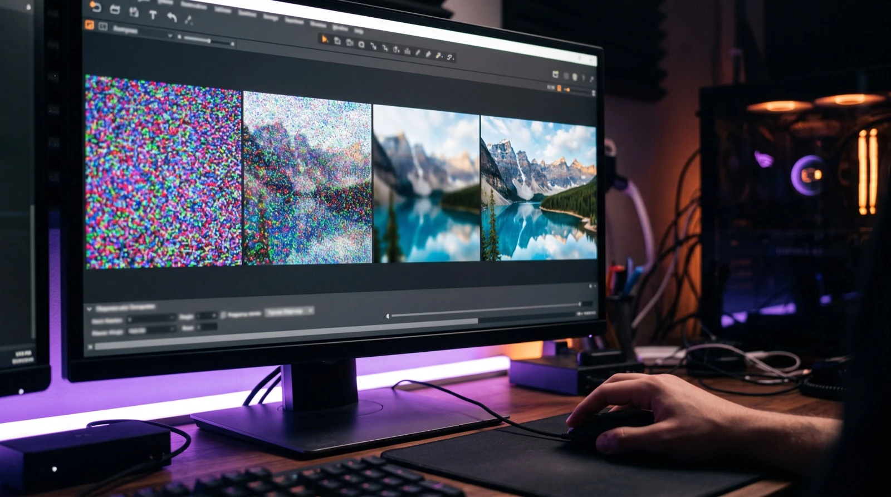

Lernmodul 10 · Studiengang Medieninformatik
UX & KI
Generative KI erzeugt in Sekunden Bilder, Screens und Texte. Ob daraus gute Gestaltung wird, entscheiden weiterhin Sie: mit einem klaren Briefing, einem geschulten Blick und Verantwortung für das Ergebnis. Dieses Modul zeigt, wie Bildmodelle arbeiten, wo KI im UX-Prozess hilft, wie Sie Bilder präzise beauftragen, prüfen und bearbeiten und was Recht und Ethik verlangen. Alle Beispielbilder dieses Moduls sind selbst mit KI entstanden, Fehler inklusive.
Grundlagen & Gestaltung
Kapitel 01–10Übungen
Einschätzen · Briefen · Sehen · Prüfen · Bearbeiten · DokumentierenWissen
Test · Literatur · RegisterKI als Partnerin in der Gestaltung
Generative KI ist kein weiteres Filter-Menü. Sie liefert in Sekunden Varianten, auf die man früher Stunden gewartet hätte. Damit verschiebt sich die Arbeit: weg vom reinen Herstellen, hin zum Beauftragen, Auswählen, Prüfen und Verantworten. Die Rolle wandelt sich von der Kreation zur Creative Direction.
Drei Phasen digitaler Gestaltungswerkzeuge
Werkzeug
Programme wie Photoshop, Illustrator und InDesign setzen um, was der Mensch Pixel für Pixel vorgibt.
Assistenz
Automatisierung übernimmt Teilschritte: inhaltsbasiertes Füllen (2010), Auto Layout, erste neuronale Filter.
Ko-Kreation
Im Dialog entstehen ganze Bilder und Screens. Die KI generiert, der Mensch kuratiert und verantwortet.
Worum es in diesem Modul geht
Bilder
Generieren, beauftragen, beurteilen und bearbeiten: von der Diffusion über die Bildsprache aus Fotografie und Film bis zu Inpainting und Relighting.
Prozesse
Wo KI im Human-Centered Design wirklich hilft, wie Workflows mit mehreren Werkzeugen aussehen und wie Sie KI-Screens auf Barrierefreiheit prüfen.
Urteil
Woran Sie gute von generischen KI-Bildern unterscheiden und welche Fehler typisch sind, auch wenn das Ergebnis perfekt aussieht.
Verantwortung
Urheberrecht, Kennzeichnungspflicht nach EU AI Act, Herkunftsnachweise mit C2PA, Bias und eine saubere Dokumentation Ihres Prozesses.
Zum Nachlesen: Einen Überblick, wie KI die UX-Arbeit insgesamt verändert, gibt das Kapitel „Future of Design“ im Lernmodul 07 · UX-Grundlagen. Wie Sie KI-gestützte Entwürfe mit echten Menschen testen, zeigt das Lernmodul 08 · UX & Evaluation.
Lernziele
Nach Bearbeitung des Moduls können Sie …
- erklären, wie Diffusions- und Sprachmodelle Bilder erzeugen und warum Fehler systembedingt sind,
- einschätzen, für welche Aufgaben KI stark und für welche sie überraschend schwach ist (Jagged Frontier),
- KI an der richtigen Stelle im Human-Centered-Design-Prozess einsetzen,
- Bilder nach dem (R)MARE(Z)-Prinzip und mit Fachbegriffen aus Fotografie und Film beauftragen,
- KI-Bilder nach gestalterischen und technischen Kriterien beurteilen und typische Fehler finden,
- generative Bildbearbeitung gezielt einsetzen, ohne die Aussage eines Bildes zu verfälschen,
- passende Werkzeuge und Workflows wählen und KI-Screens auf Barrierefreiheit prüfen,
- rechtliche Pflichten kennen und Ihren KI-Einsatz nachvollziehbar dokumentieren.
So arbeiten Sie mit dem Modul
Jedes Kapitel hat ein interaktives Beispiel: ein Diffusionsregler, ein Prompt-Baukasten, ein Regiepult für Kameraeinstellungen und Vorher-nachher-Vergleiche.
Sechs Übungen vom Einschätzen der KI-Stärken bis zur Fehlersuche in einem echten KI-Bild. Jede endet mit „Als erledigt markieren“.
In Übung 6 dokumentieren Sie ein KI-Bild aus Ihrem eigenen Projekt und laden die Dokumentation als PDF oder Markdown herunter.
Wie Bildmodelle arbeiten
KI-Systeme verstehen nicht, was sie zeigen. Sie berechnen Wahrscheinlichkeiten. Bildmodelle lernen aus Milliarden Bild-Text-Paaren, Sprachmodelle aus Billionen Textbausteinen. Das Ergebnis ist plausibel, aber nicht automatisch richtig. Wer das weiß, prüft anders.

Diffusion: Ein Bild entsteht aus Rauschen
Diffusionsmodelle starten mit zufälligem Rauschen und entfernen es in 20 bis 50 Schritten. In jedem Schritt schätzt das Modell, welcher Anteil Rauschen ist, gelenkt durch den Text Ihres Prompts. Zuerst entstehen grobe Formen und Farbflächen, zuletzt feine Details.
Vereinfachte Veranschaulichung: Ein echtes Modell rechnet nicht mit fertigen Pixeln, sondern im latenten Raum, und kennt das Zielbild vorher nicht.
Der latente Raum
Stellen Sie sich eine riesige Bibliothek vor, in der Bücher nicht nach Titel, sondern nach Inhalt und Stimmung sortiert sind. „Katze mit Hut“ steht neben „Tier mit Accessoire“, aber weit weg von „Industrieanlage“. Der latente Raum ist diese Bibliothek als hochdimensionaler Vektorraum. Diffusionsmodelle wie Stable Diffusion arbeiten in einer komprimierten Fassung dieses Raums, etwa 64 × 64 statt 512 × 512 Werte. Das macht sie schnell.
Nachbarschaft
Ähnliche Prompts führen zu ähnlichen Bildern. Kleine Änderungen im Prompt verschieben das Ergebnis nur ein wenig.
Mischen
Zwischen zwei Konzepten lässt sich interpolieren, zum Beispiel „70 % Foto, 30 % Illustration“.
Rollen
„Du bist Fotografin“ lenkt in andere Regionen des Raums als „Du bist Illustratorin“. Klare Ziele wirken aber meist stärker als die Rolle.
Ausprobieren: Das wahrscheinlichste nächste Wort
Sprachmodelle sagen Token für Token voraus, was am wahrscheinlichsten folgt. Autoregressive Bildmodelle gibt es seit DALL·E 1 (2021) und Parti (2022). Seit 2025 erzeugen auch multimodale Chat-Modelle wie GPT Image (OpenAI) oder Gemini Bilder auf diese Weise: Stück für Stück, statt durch Entrauschen. Wählen Sie die Fortsetzung. Die Wahrscheinlichkeiten sind ausgedacht, das Prinzip nicht.
Das wahrscheinlichste Wort ist nicht immer das richtige. Darum klingen KI-Antworten oft überzeugend, auch wenn sie falsch sind. Bei Bildern heißt das: Ein Bild kann perfekt aussehen und trotzdem sechs Finger, eine unmögliche Spiegelung oder erfundenen Text enthalten.
Die Jagged Frontier
Eine Studie der Harvard Business School mit Beratenden der Boston Consulting Group (Dell’Acqua, Mollick u. a., 2023) zeigt: Die Grenze dessen, was KI kann, verläuft gezackt. KI übertrifft Menschen bei Aufgaben, die schwer erscheinen, und scheitert an Aufgaben, die einfach wirken.
Überraschend gut
- erste Entwürfe von Briefings, Konzepten und Prompts
- viele Varianten in kurzer Zeit
- Texte vereinfachen und umformulieren
- große Textmengen strukturieren und zusammenfassen
- Standardaufgaben wie Wireframes und Moodboards
- Code nach klarer Spezifikation
Überraschend schwach
- räumliches Denken und physikalische Konsistenz
- zuverlässiges Zählen von Buchstaben oder Objekten
- Kreativität jenseits des Trainingsdurchschnitts
- Beurteilen, ob etwas zur Marke und Zielgruppe passt
- Aufgaben ohne Vorbild in den Trainingsdaten
- ethische Abwägung und Verantwortung
Die vier Grundregeln der KI-Arbeit
Partnerin, nicht Packesel
Im Dialog iterieren statt einen einzigen Prompt abzuschicken.
Klare Absicht
Ziel und Kontext beschreiben statt Mikroanweisungen.
Immer prüfen
Halluzinationen und Bildfehler sind normal, nicht die Ausnahme.
Passendes Werkzeug
Jedes Modell hat seine Stärken (Kapitel 08).
KI im UX-Prozess
KI-Werkzeuge ersetzen keine Designmethodik. Human-Centered Design legt fest, wofür Sie etwas generieren, nicht die Maschine. Wer ohne verstandenes Problem Bilder erzeugt, bekommt schnell viele, aber beliebige Ergebnisse.
Ausprobieren: KI im Double Diamond
Wählen Sie eine Phase. Sie sehen, wobei KI dort hilft und was Sie selbst verantworten.
Merkregel: Bildgenerierung setzt im Schritt „Develop“ an. Erst wenn das Problem in „Define“ klar formuliert ist, lohnt es sich, Bilder zu erzeugen. Zu früher KI-Einsatz ohne dieses Fundament führt zu generischen Ergebnissen.
Der Mobile-Design-Workflow mit KI
Für Apps gilt dasselbe im Kleinen. Apps sind keine verkleinerten Websites: Sie werden in kurzen Momenten genutzt, unterwegs, oft mit einer Hand. KI unterstützt auf drei Ebenen: strategisch (Szenarien, Flows), gestalterisch (Varianten, Microcopy) und prüfend (Barrierefreiheit, Konsistenz).
Gute und schlechte Fragen an die KI
„Wie bekommen wir alle Inhalte auf die Startseite?“
Die Startseite wird zum Sammelbecken statt zur Entscheidungshilfe.
„Was braucht die Nutzerin in den ersten fünf Sekunden, um ihre Aufgabe zu beginnen?“
Ergebnis: klare Priorität und ein besserer Informationsrhythmus.
KI erzeugt Flow-Varianten in Sekunden. Prüfen müssen Sie, ob jeder Screen benannt ist, ob Aktionen und Systemfeedback klar sind, ob Fehlerzustände existieren und ob man abbrechen und zurückspringen kann. Diese Prüfung ist Ihre Aufgabe, genau wie der Test mit echten Menschen.
Prompting als Briefing
Prompting ist weniger Zauberspruch als präzise Creative Direction. Ein guter Prompt ist ein gutes Briefing: Er sagt, warum etwas entsteht, was genau zu tun ist, wie das Ergebnis aussehen soll und woran man sich orientieren kann.

Das (R)MARE(Z)-Prinzip
Rolle (optional)
Welche Funktion soll die KI einnehmen?
Motivation
Warum mache ich das? Kontext und Ziel.
Aufgabe
Was genau soll die KI tun?
Resultat
Format, Länge, Tonalität des Ergebnisses.
Exempel
Beispiele oder Referenzbilder für den Stil.
Zusatzinfo (optional)
Hintergrund, Leitlinien, Material.
Ausprobieren: Prompt-Baukasten
Füllen Sie die Bausteine aus oder laden Sie das Beispiel aus dem Skript: ein Onboarding-Flow für eine E-Bike-Sharing-App. Rechts sehen Sie den zusammengesetzten Prompt, farbig nach Baustein.
Prompting im Wandel
Aktuelle Modelle brauchen weniger Formeln und mehr Kontext. Das Skript stützt sich hier auf Einschätzungen aus der Softwareentwicklung (N. Steenfatt, 2026) und auf Anthropics Hinweise zum „Context Engineering“ (2025). Ob sie für Bildmodelle gelten, prüfen Sie am besten im eigenen Vergleich.
| Bisher | Heute | Für die Gestaltung |
|---|---|---|
| Jeden Schritt genau vorgeben | Ziel, Kontext und Qualitätskriterien beschreiben, den Weg wählt das Modell | Wirkung, Zielgruppe und Einsatz zuerst nennen, Fachvokabular gezielt nachreichen |
| Lange Prompt-Formeln | Kurz starten, nur bei Abweichung nachschärfen | Kurz- und Langprompt vergleichen, bevor eine Vorlage festgeschrieben wird |
| Alles in einem Chat | Pro Thema ein eigener Verlauf | Moodboard, Logo und Screens in getrennten Chats |
| Regeln als immer längerer Fließtext | Wenige Regeln, Prüfbares als feste Checks | Corporate Design als Tokens, Vorlagen und Referenzbilder |
| Jede Zeile von Hand prüfen | Kriteriengeleitet prüfen, Verantwortung bleibt beim Menschen | Mit Checklisten prüfen und entscheiden, was nicht umgesetzt wird |
So arbeitet man heute: Briefing im Dialog
Sie liefern Ziel, Wirkung und harte Vorgaben. Den modellgerechten Prompt kann ein Sprachmodell wie Claude schreiben und über Schnittstellen direkt an ein Bildwerkzeug geben (Kapitel 08).
SieIch brauche ein Hero-Bild für die Startseite unserer Banking-App. Zielgruppe: Studierende. Wirkung: ruhig und vertrauenswürdig. Links muss Platz für die Headline bleiben.
KIDrei Rückfragen: Foto oder Illustration? Wo erscheint das Bild? Gibt es Referenzbilder oder Markenvorgaben?
SieFoto, Website-Header im Format 3:2. Anbei zwei Bilder aus unserer letzten Kampagne.
KIIch erzeuge vier Varianten und nutze Ihre Bilder als Stilreferenz. Variante 2 lässt links am meisten Platz, in Variante 4 steht ein Schriftzug im Hintergrund.
SieVariante 2, Hintergrund etwas wärmer, sonst nichts ändern.
Absicht vor Anweisung
Beschreiben Sie Zweck, Wirkung und Zielgruppe. Fachbegriffe setzen Sie gezielt ein, wenn das Ergebnis die Wirkung verfehlt.
Schlank starten, gezielt schärfen
Erst ein kurzer Prompt, dann bewerten und nachsteuern. Ändern Sie gezielt („nur X ändern, alles andere gleich lassen“) statt neu zu generieren.
Regeln prüfbar machen
Was messbar ist, wird gemessen: Farbwerte als Tokens, Kontrast mit Prüfwerkzeugen, Referenzbilder für den Stil.
Urteilen und verantworten
Sie entscheiden, was umgesetzt wird und was nicht, nach klaren Kriterien.
Formulierung nach Modelltyp
GPT Image (OpenAI): Zweck nennen (Anzeige, UI-Mockup, Infografik), Text im Bild in Anführungszeichen, bei Änderungen „nur X ändern, alles andere gleich lassen“.
Nano Banana (Google Gemini): die Szene erzählen statt Stichworte aufzählen, Kamerabegriffe statt „schön“, Abwesenheit positiv beschreiben („leere Straße“ statt „keine Autos“).
Midjourney: präzise, längere Sätze, frühe Wörter wiegen stärker, Stil über Style-Reference und Moodboards.
Lokale Modelle: SDXL arbeitet mit Stichworten, Gewichtung und Negativ-Prompts, FLUX mit natürlichen Sätzen. Seed, Sampler und Steps steuern die Wiederholbarkeit.
Fazit: MARE bleibt das Briefing. Die Formulierung passen Sie dem Modell an, und Referenzbilder sind das stärkste „Exempel“.
Visuelle Regie: Fotografie und Film im Prompt
Gute Bildprompts entstehen aus Bildkompetenz. Wer weiß, wie Brennweite, Perspektive und Licht wirken, kann sie gezielt anfordern. Fachbegriffe sind präziser als Adjektive wie „schön“ oder „modern“. Sie sind Werkzeuge, um Blick, Raum, Stimmung und Material zu steuern.
Ausprobieren: Das Regiepult
Dasselbe Motiv, sechs Anweisungen. Bis auf den markierten Teil war der Prompt jedes Mal gleich: eine junge Frau mit kurzen roten Haaren in gelber Regenjacke neben ihrem grünen Fahrrad.
Fachbegriffe aus der Fotografie
| Bereich | Begriff im Prompt | Wirkung |
|---|---|---|
| Kamera und Perspektive | 24mm · 35mm · 50mm · 85mm · low angle · top shot | räumlich und dynamisch · dokumentarisch · normal · Porträt, verdichtet · heroisch · analytisch, grafisch |
| Blende und Schärfe | f/1.4–f/1.8 · f/2.8 · f/8–f/11 · shallow depth of field · deep focus | starke Unschärfe · Porträtlook · viel Schärfe · Fokus lenken · Kontext erhalten |
| Licht | soft window light · golden hour · rim light · low-key · high-key · studio softbox | natürlich, intim · warm, emotional · Kontur und Tiefe · dramatisch · hell, clean · kontrolliert |
| Look und Material | film grain · macro photography · product photography · editorial photography | analog · Detail · sachlich · redaktionell |
Tiefenschärfe in vier Sätzen: Je weiter die Blende geöffnet ist (kleine Blendenzahl), desto geringer die Schärfentiefe. Je länger die Brennweite, desto geringer die Schärfentiefe. Je größer der Sensor, desto geringer die Schärfentiefe. Je weiter das Motiv entfernt ist, desto größer die Schärfentiefe.
Fachbegriffe aus Film und Video
Shot-Typen
Establishing Shot führt Ort und Situation ein, Close-up zeigt Emotion und Detail, Medium Shot Person und Umgebung, Over-the-Shoulder Dialog und Subjektivität.
Kamera und Bewegung
handheld wirkt dokumentarisch, tracking shot dynamisch, anamorphic lens nach Kino, motion blur nach Geschwindigkeit.
Farbdramaturgie
cinematic color grading, teal and orange, muted documentary palette oder warm nostalgic grade geben die Grundstimmung vor.
Für Video-KI kommen Anfangs- und Endzustand, Kamera- und Motivbewegung, Timing, Schnitt und Kontinuität hinzu. Mehr zu Bewegung im Interface finden Sie im Lernmodul 09 · UX & Animation.
Zehn Bausteine für Bildprompts
Eine Checkliste, kein Pflichtformular: Starten Sie mit Ziel und Kontext und ergänzen Sie gezielt.
- 01
Ziel und Kontext
Wofür wird das Bild gebraucht?
- 02
Motiv und Inhalt
Was ist zu sehen?
- 03
Szene und Handlung
Was passiert?
- 04
Komposition
Bildausschnitt, Perspektive, Raum für Text.
- 05
Licht, Farbe, Stimmung
Die Atmosphäre steuern.
- 06
Stil und Medium
Foto, Illustration, 3D, Editorial.
- 07
Technik
Kamera, Brennweite, Blende, Format.
- 08
Zielgruppe und Marke
Tonalität, Werte, Bildsprache.
- 09
Ausschlüsse
Keine Logos, kein Text, keine Artefakte.
- 10
Output
Seitenverhältnis, Varianten, Transparenz.
Praxistest: Ein Motiv, drei Prompt-Stile
Hero-Bild für eine Banking-App, getestet am 21.10.2026 mit Magnific, je ein Durchlauf. Wählen Sie einen Stil.
Fazit: Nicht die Länge entscheidet, sondern die Absicht plus harte Vorgaben. Ein Durchlauf ist nicht repräsentativ. Mit einem weiteren Versuch können die Ergebnisse anders ausfallen. Prüfen bleibt bei Ihnen.
KI-Bilder beurteilen
Ohne Urteilskraft entstehen viele Varianten, aber keine besseren Entscheidungen. KI-Fehler werden seltener, aber subtiler. Ein Bild kann technisch perfekt und trotzdem falsch, generisch oder unpassend für die Marke sein.
Acht Kriterien für ein gutes KI-Bild
Komposition
Ist der Bildaufbau klar und spannungsvoll?
Hierarchie
Was wird zuerst wahrgenommen?
Licht
Unterstützt die Lichtführung die Botschaft?
Farbe
Passt die Farbdramaturgie zur Marke?
Narration
Erzählt das Bild etwas?
Originalität
Eigenständig oder generischer KI-Look?
Fehlerfreiheit
Anatomie, Text, Perspektive, Artefakte.
Nutzung
Funktioniert das Bild im Layout?
Ausprobieren: Der 3-Sekunden-Test
Auf einer Website oder in einer App entscheidet der erste Eindruck. Starten Sie den Test, betrachten Sie das Bild drei Sekunden und beantworten Sie dann die Frage.
Das Bild erscheint für drei Sekunden.
Typische Bildfehler
| Fehlerart | Woran Sie ihn erkennen | Prüfschritt |
|---|---|---|
| Anatomie | Sechs Finger, falsch verbundene Gelenke, gespiegelte Körperteile, besonders bei Nahaufnahmen und Gesten | Hände und Augen einzeln ansehen |
| Text | Lesbare Buchstaben mischen sich mit sinnlosen Zeichen. Kurze Headlines gelingen heute meist, lange Texte, kleine Schrift und Umlaute seltener | Buchstabe für Buchstabe lesen |
| Physik und Maßstab | Schatten in falscher Richtung, schwebende Objekte, unstimmige Größenverhältnisse | Schatten, Kontaktpunkte, Proportionen |
| Doppelte Elemente | Zwei linke Hände, Brillen mit vier Gläsern, verschmolzene Objekte | Symmetrie und Anzahl prüfen |
| Artefakte | Hintergrund wie gemalt, Vordergrund fotorealistisch, Brüche an Kanten | Auf 200 % zoomen |
| Serien | Gleicher Prompt, aber anderes Licht, andere Figur oder anderes Produkt | Seed und Referenzbilder nutzen |
kurze Texte und Headlines, Hände in Standardposen, Fotorealismus und Licht, gezieltes Ändern im Dialog
Hände beim Greifen, Physik von Kontakt und Gießen, lange Texte und Sonderzeichen, Identitätsdrift über mehrere Bearbeitungen
inhaltlich falsche Infografiken mit perfekter Typografie, KI-Look (glatte Haut, Studiolicht, Symmetrie), erfundene Marken, Klischees
Prüfen in fünf Schritten
- 01
Aufmerksam betrachten
Erster Eindruck: Wirkung, Hauptmotiv, 3-Sekunden-Test.
- 02
Fehlerarten durchgehen
Anatomie, Text, Physik, Duplikate, Artefakte, Serie.
- 03
Auf 200 % zoomen
Kanten, Texturen und Kleinschrift prüfen.
- 04
Mit Wissen und Referenzen abgleichen
Stimmt das Produkt, der Ort, die Fakten?
- 05
Erst dann weiterverarbeiten
Markencheck, rechtliche Dokumentation, Freigabe.
In Übung 4 suchen Sie die Fehler in einem Bild, das für dieses Modul generiert wurde.
Generative Bildbearbeitung
KI verändert nicht nur Pixel, sie erzeugt neue Inhalte passend zum Bildkontext. Das macht Retusche schnell und mächtig. Gerade deshalb gilt: KI darf ein Bild verbessern, aber nicht seine wesentliche Aussage, die Identität eines Produkts oder die dokumentarische Wahrheit verfälschen.
Ausprobieren: Fünf Bearbeitungen an einem Foto
Ausgangsbild war ein KI-generiertes Produktfoto einer Teekanne. Jede Bearbeitung wurde mit einem anderen Magnific-Werkzeug ausgeführt. Ziehen Sie den Regler, um vorher und nachher zu vergleichen. Achten Sie auf die Hinweise darunter: Nicht alles ist gelungen.
Weitere Techniken
| Technik | Was passiert | Typischer Einsatz |
|---|---|---|
| Inpainting | Ein maskierter Bereich wird nach Prompt neu erzeugt | Detail ersetzen, Gegenstand austauschen |
| Outpainting | Die Bildfläche wird über den Rand hinaus erweitert | anderes Format, Platz für Text |
| Object Removal | Störende Elemente werden entfernt und der Hintergrund ergänzt | Kabel, Mülleimer, Passanten |
| Background Replacement | Das Motiv bleibt, die Umgebung wird neu erzeugt | Produkt in verschiedenen Szenen |
| Relighting | Lichtrichtung und Lichtstimmung werden geändert | einheitliche Stimmung in einer Serie |
| Upscaling | Auflösung und Details werden erhöht, teils durch erfundene Details | Druck, große Formate |
| Style Transfer | Die ästhetische Richtung eines Bildes wird übertragen | Moodboards, Illustrationsstil |
| Compositing | Mehrere Quellen werden zu einem Bild verbunden | Kampagnenmotive |
Der Bearbeitungs-Workflow
- Originalfoto prüfen
- Produkt, Person oder Hauptmotiv schützen
- Bereiche sauber maskieren
- Referenzen und Rechtslage klären
- Hintergrund ersetzen
- Objekte entfernen oder ergänzen
- Bild erweitern
- Licht oder Atmosphäre anpassen
- Kanten, Masken, Schatten, Spiegelungen
- Perspektive und Maßstab
- Produktdetails mit dem Original vergleichen
- Export und Dokumentation
Leitsatz: Bei Produkt-, Personen- und Dokumentationsbildern darf KI keine relevanten Eigenschaften verfälschen. Die Teekanne aus dem Beispiel oben darf im Shop nicht beige erscheinen, wenn sie grau ist.
Werkzeuge und Workflows
Der Markt ändert sich wöchentlich. Eine Liste der besten Tools ist darum schnell veraltet. Hilfreicher ist die Frage, wie ein Werkzeug arbeitet und wo es in Ihren Workflow passt. Entscheidend ist nicht das einzelne Tool, sondern die Kette vom Briefing bis zum fertigen Asset.
Kategorien statt Tool-Listen
Dialogische Generatoren
Iteratives Prompting, Kontextverständnis, Bearbeitung im Chat. Beispiele: ChatGPT mit GPT Image, Gemini.
Ästhetische Generatoren
Atmosphäre, Kampagnenlook, Moodboards. Beispiel: Midjourney.
Creative-Cloud-Workflow
Retusche, Generative Fill, Reinzeichnung, Content Credentials. Beispiel: Adobe Firefly in Photoshop und Illustrator.
Offen und lokal
Kontrolle, Datenschutz, eigene Stile (LoRA). Beispiele: FLUX, Stable Diffusion mit ComfyUI.
Schnittstellen (API)
Automatisierung und Integration ins Produkt. Beispiele: fal.ai, Replicate, OpenAI, Google.
Plattformen mit Modellauswahl
Viele Modelle in einer Oberfläche, gut für Vergleiche. Beispiel: Magnific (ehemals Freepik).
Welches Werkzeug für welche Aufgabe?
| Aufgabe | Geeignet | Begründung |
|---|---|---|
| Schnelle Ideen | dialogische Generatoren | niedrige Einstiegshürde, Änderungen im Gespräch |
| Hochwertiges Moodboard | ästhetische Generatoren | Bildqualität und Atmosphäre |
| Professionelle Retusche | Photoshop mit Firefly | Masken, Ebenen, Reinzeichnung |
| UI- und App-Screens | Figma AI, Figma Make, Sprachmodelle | Layoutideen, Komponenten, Prototypen |
| Lokale Experimente | ComfyUI mit SD oder FLUX | Parameter, LoRA, Datenschutz |
| Automatisierung | APIs | Skalierung, Stapelverarbeitung, Produktintegration |
Für Ästhetik gilt Midjourney (V8.x) als stark, für Text im Bild GPT Image 2, für den Adobe-Workflow Firefly Image 5, für Realismus und Konsistenz FLUX 2. Adobe gibt an, Firefly mit lizenzierten und gemeinfreien Inhalten trainiert zu haben. DALL·E 3 wurde am 12.05.2026 abgeschaltet.
Workflow A: Vom Briefing zum Hero-Bild
- 01
Briefing klären
Ziel, Zielgruppe, Medium, Marke.
- 02
Bildstrategie
Stimmung, Komposition, Raum für Text.
- 03
Prompt erstellen
Motiv, Kamera, Licht, Stil, Ausschlüsse.
- 04
Varianten generieren
Grob erkunden, nicht zu früh optimieren.
- 05
Bewerten
Marke, Zielgruppe, Hierarchie, Fehler, Originalität.
- 06
Bearbeiten
Inpainting, Outpainting, Retusche, Farblook.
- 07
Reinzeichnen
In Photoshop, Figma oder im Layout, Beschnitt, Export.
- 08
Dokumentieren
Tool, Modell, Prompt, Referenzen, KI-Anteil.
Workflow C: Lokale KI mit ComfyUI
ComfyUI ist ein knotenbasierter Editor: Sie bauen die Pipeline als Graph, statt Formulare auszufüllen. Das passt zur Medieninformatik. Lokale Modelle schützen sensible Kundendaten, kosten nach der Hardware nichts pro Bild und lassen jeden Parameter offen. Empfohlen sind mindestens 8 GB Grafikspeicher, besser 12 bis 16 GB. Apple Silicon funktioniert über das MPS-Backend, langsamer als NVIDIA.
Für Markenkonsistenz lässt sich ein LoRA trainieren, ein kleines Zusatzmodell aus etwa 15 bis 30 Referenzbildern. Beachten Sie die Lizenz des Modells: Manche offene Gewichte sind nur nicht-kommerziell nutzbar.
Workflow D: Ein Sprachmodell als Schaltzentrale
Sprachmodelle wie Claude erzeugen selbst keine Fotos, können aber andere Werkzeuge über das Model Context Protocol (MCP) ansteuern, einen offenen Standard für Konnektoren. Sie melden sich mit Ihrem eigenen Konto beim Anbieter an, Kosten laufen über dieses Konto. Nach diesem Muster sind auch die Bilder dieses Moduls entstanden (siehe Bildnachweis).
| Schritt | Wer | Was |
|---|---|---|
| 1 · Briefing | Sprachmodell | Ziel, Zielgruppe und Bildwirkung nach MARE im Chat beschreiben |
| 2 · Prompt und Modell | Sprachmodell | modellgerechten Prompt formulieren, Modell vorschlagen |
| 3 · Generieren | Bildwerkzeug | Varianten erzeugen, Kosten vorher abfragen |
| 4 · Auswählen und prüfen | Mensch | Bildfehler-Check: Hände, Text, Physik, KI-Look, Marke |
| 5 · Nachbearbeiten | Bildwerkzeug | Hochskalieren, freistellen, zuschneiden |
| 6 · Einsetzen | Layout | in Folie, Screen oder Website setzen |
| 7 · Dokumentieren | Mensch | Tool, Modell, Prompt und KI-Anteil notieren, ggf. kennzeichnen |
KI und Corporate Design
Modelle erzeugen im Stil des Trainingsdurchschnitts, nicht im Stil Ihrer Marke. Vier Gegenmittel, nach Aufwand sortiert:
Style Reference
Markenbilder als Referenz mitgeben. Schnellste Methode ohne Training. Aufwand: niedrig.
Prompt-Vorlage mit CI-Ankern
Feste Bausteine für Farbe, Bildstil und Tonalität in jedem Prompt. Aufwand: niedrig.
LoRA-Training
Eigenes Zusatzmodell aus Markenbildern, reproduzierbar konsistent. Aufwand: mittel.
Reinzeichnung
KI liefert den Rohling, Farben, Logos und Schriften werden in Figma oder Photoshop CI-konform nachgezogen. Aufwand: hoch, aber verbindlich.
KI-Screens und Barrierefreiheit
KI-generierte Screens wirken oft hochwertig, sind aber nicht automatisch konsistent, bedienbar oder barrierefrei. KI kann helfen, Barrieren zu erkennen. Sie garantiert aber keine barrierefreie Nutzung. Designerinnen und Designer müssen die Nutzung beweisen, nicht nur behaupten.
Was KI bei der Prüfung kann und was nicht
KI kann gut
- offensichtliche Muster finden
- Checklisten vorbereiten
- Alt-Text-Entwürfe schreiben
- Fehlertexte verbessern
- Semantik und Lesereihenfolge beschreiben
KI kann nicht sicher
- echte Screenreader-Erfahrung ersetzen
- Kontext immer richtig verstehen
- Zielgruppenverständnis garantieren
- komplexe ARIA-Umsetzungen verifizieren
Darum gilt Human in the Loop: KI liefert Diagnosevorschläge, Sie messen mit Werkzeugen, testen mit Tastatur, VoiceOver und TalkBack, testen mit Menschen und dokumentieren die Korrekturen. Die Grundlagen der WCAG 2.2 finden Sie in den Lernmodulen 06 und 07.
Prompt-Vorlagen für ein Accessibility-Review
Gute Prompts machen Kriterien prüfbar. Sie sagen der KI, was genau sie ansehen soll.
| Thema | Prompt |
|---|---|
| Kontrast | „Prüfe Text-, Button-, Icon- und Zustandskontraste nach WCAG 2.2 AA.“ |
| Fokus | „Beschreibe Tab-Reihenfolge, Fokuszustände und mögliche Fokusfallen.“ |
| Touch | „Markiere zu kleine oder zu eng platzierte Touch-Ziele.“ |
| Formulare | „Prüfe Labels, Pflichtfelder, Fehlertexte, Autovervollständigung und Tastaturtypen.“ |
| Screenreader | „Simuliere Lesereihenfolge, Rollen, Labels und Statusmeldungen.“ |
| Sprache | „Formuliere die Texte einfach, direkt und fachlich korrekt.“ |
Wichtig: Die Hinweise der KI anschließend messen, im Prototyp prüfen und mit Menschen testen.
Ausprobieren: Welcher Alt-Text passt?
Nicht jedes Bild braucht dieselbe Beschreibung. Entscheidend ist die Funktion im Kontext. Die Leitfrage lautet: Welche Information oder Funktion würde fehlen, wenn das Bild nicht sichtbar wäre? Wählen Sie ein Beispiel.
Einfache Sprache
„Die Transaktion konnte aufgrund inkonsistenter Authentifizierungsdaten nicht abgeschlossen werden.“
„Die Zahlung hat nicht geklappt. Bitte prüfen Sie den Freigabe-Code aus Ihrer Banking-App. Versuchen Sie es dann noch einmal.“
Kurze Sätze, aktive Sprache, direkte Ansprache, eine Aussage pro Satz, Handlung klar benennen. Statt „Ungültige Eingabe.“ besser: „Bitte geben Sie die Telefonnummer mit Ländervorwahl ein, z. B. +49 171 1234567.“ Statt „OK“, „Mehr“ oder „Weiter“ besser eindeutige Namen wie „Profil bearbeiten“ oder „Zahlung bestätigen“. Das hilft auch bei der Sprachsteuerung.
Recht, Ethik und die neue Rolle
Bei KI-Bildern gehört die Prozessdokumentation zur professionellen Gestaltung. Sie entscheidet mit darüber, ob ein Werk geschützt ist, ob Kennzeichnungspflichten erfüllt sind und ob Sie im Streitfall Ihre Eigenleistung nachweisen können.
Hinweis: Dieses Kapitel gibt den Stand des Skripts vom Oktober 2026 wieder und ist keine Rechtsberatung. Gesetze und Rechtsprechung entwickeln sich weiter.
Urheberrecht: Wem gehört das KI-Bild?
Nach § 2 des Urheberrechtsgesetzes sind nur persönliche geistige Schöpfungen geschützt. Eine KI kann keine Urheberin sein. Reine KI-Ausgaben sind deshalb in der Regel nicht geschützt.
Reiner KI-Output
Nur ein Prompt. Kein Urheberrecht, aber Rechte Dritter beachten.
Wesentliche Bearbeitung
Komplexe Anweisungskette plus manuelle Eingriffe. Möglicherweise geschützt.
Menschliche Eigenleistung
KI als Basis plus eigene gestalterische Arbeit mit Schöpfungshöhe.
Praxistipp: Dokumentieren Sie Ihren kreativen Prozess, damit Sie die menschliche Eigenleistung nachweisen können.
EU AI Act: Kennzeichnungspflicht
- Februar 2025Verbote unannehmbarer KI-Praktiken, etwa Social Scoring
- August 2025Governance und Transparenzpflichten für Anbieter von KI-Modellen mit allgemeinem Verwendungszweck
- August 2026Transparenzpflichten nach Art. 50 gelten. Hochrisiko-Regeln wurden per „Digital Omnibus“ verschoben (Anhang III auf 12/2027, Anhang I auf 08/2028)
- August 2027Übergangsfrist für Modelle, die vor August 2025 auf den Markt kamen, endet
Für Sie als Gestaltende
Deepfakes, also täuschend echte Darstellungen realer Personen, Orte oder Ereignisse, müssen sichtbar offengelegt werden (Art. 50 Abs. 4).
Für Anbieter der Werkzeuge
KI-Ausgaben müssen maschinenlesbar markiert sein, etwa mit C2PA-Metadaten oder Wasserzeichen (Art. 50 Abs. 2). Für Bestandssysteme gilt eine Übergangsfrist bis 2.12.2026.
Bei Verstößen drohen Bußgelder von bis zu 15 Mio. € oder 3 % des weltweiten Jahresumsatzes.
C2PA und Content Credentials
Die Coalition for Content Provenance and Authenticity, 2021 unter anderem von Adobe, Arm, BBC, Intel, Microsoft und Truepic gegründet, hat einen offenen Standard für Herkunftsnachweise entwickelt. Kryptografisch signierte Metadaten in der Datei halten fest, wer ein Bild erstellt hat, mit welchen Werkzeugen, ob KI beteiligt war und welche Bearbeitungen folgten. Manipulationen brechen die Signatur. Die Metadaten lassen sich aber entfernen.
Metadaten
Signierte C2PA-Angaben direkt in der Datei.
Unsichtbare Wasserzeichen
Veränderungen in den Pixeln, die Komprimierung überstehen.
Fingerprints und Protokolle
Rückfalloption zur nachträglichen Prüfung.
Was Sie dokumentieren und prüfen
Dokumentieren
- Tool, Modell und Datum
- Prompt-Versionen und Varianten
- Referenzbilder und Quellen
- manuelle Bearbeitungsschritte
- Lizenzen und Nutzungsrechte
Sensibel prüfen
- reale Personen und Persönlichkeitsrechte
- Markenlogos und geschützte Designs
- Stilnähe zu lebenden Künstlerinnen und Künstlern
- Deepfake- und Täuschungsrisiken
- Wahrheit von Produkt und Dokumentation
Transparent machen
- Content Credentials erhalten
- KI-Anteil bei Bedarf kennzeichnen
- Quellenliste im Projekt führen
- Herkunft nachvollziehbar halten
Die dunkle Seite
Visuelle Monokultur
Wenn alle den wahrscheinlichsten Durchschnitt nutzen, sieht alles gleich aus. Gute Gestaltung liegt im Abweichen.
Bias
KI spiegelt Vorurteile aus ihren Daten. „Professor“ ergibt oft einen älteren weißen Mann. Steuern Sie bewusst gegen: Herkunft, Alter, Körper.
Ressourcen
Eine KI-Anfrage verbraucht deutlich mehr Strom als eine Websuche. Wägen Sie ab, wann ein klassischer Weg effizienter ist.
Die neue Rolle: Von der Kreation zur Creative Direction
Freistellen, Retusche, Varianten, technische Optimierung, Hintergründe.
Empathie und Nutzerverständnis, Strategie, Storytelling und Markenführung, ethische Entscheidungen, Bewerten und Prüfen, und die Entscheidung, was nicht umgesetzt wird.
„Wird die KI Ihren Job übernehmen? Nein. Aber eine Person, die KI besser nutzt als Sie, vielleicht.“Oft zitierter Satz, sinngemäß dem Ökonomen Richard Baldwin zugeschrieben
Jon Kolko beschreibt in seinem Essay „A Design Turn“, wie Design sich vom spezialisierten Handwerk zu einer Kulturtechnik wandelt, vergleichbar mit Schreiben. Wertvoll bleibt das Urteil: zu wissen, was gut ist und warum.
Stark oder schwach?
Zehn Aufgaben aus einem App-Projekt. Schätzen Sie ein, ob KI sie zuverlässig gut erledigt oder ob Sie besonders genau prüfen müssen.
Ordnen Sie jede Aufgabe einer Seite der Jagged Frontier zu. Bestanden ist die Übung bei mindestens acht richtigen Einschätzungen.
Prompt zerlegen
Ein Prompt für das Hero-Bild einer Mensa-App, zerlegt in acht Sätze. Zu welchem Baustein des (R)MARE(Z)-Prinzips gehört jeder Satz?
Wählen Sie für jeden Satz den passenden Baustein. Bestanden ist die Übung bei mindestens sechs richtigen Zuordnungen.
Kamerasprache erkennen
Sechs Bilder, ein Motiv. Jedes wurde mit einer anderen Kamera- oder Lichtanweisung generiert. Welche war es?
Wählen Sie für jedes Bild den Teil des Prompts, der es geprägt hat. Jede Anweisung kommt genau einmal vor. Bestanden ist die Übung bei mindestens fünf richtigen Zuordnungen.
Bildfehler finden
Dieses Bild wurde für das Modul mit folgendem Prompt generiert: Nahaufnahme der Hände eines Baristas, der Milch in einen Cappuccino gießt, im Hintergrund trägt ein Kellner drei Gläser, dahinter eine Kreidetafel mit dem Text „Frühstück täglich bis 14 Uhr – hausgemachte Brötchen, Müsli und Rührei mit Schnittlauch“.
Sehen Sie sich das Bild genau an. Öffnen Sie es in voller Größe und zoomen Sie hinein. Kreuzen Sie dann alle Aussagen an, die einen echten Fehler beschreiben. Bestanden ist die Übung, wenn mindestens sieben von acht Entscheidungen stimmen.
Welche Bearbeitung passt?
Sieben Anfragen aus Projekten. Wählen Sie die passende generative Technik, oder lehnen Sie ab, wenn die Bearbeitung die Aussage des Bildes verfälschen würde.
Wählen Sie für jede Anfrage eine Technik oder „Ablehnen“. Bestanden ist die Übung bei mindestens sechs richtigen Antworten.
KI-Bild-Dokumentation
Dokumentieren Sie ein KI-Bild aus Ihrem eigenen Projekt so, dass eine andere Person nachvollziehen kann, wie es entstanden ist, was Sie selbst beigetragen haben und ob es gekennzeichnet werden muss.
Füllen Sie das Formular aus. Mit „Dokumentation prüfen“ erhalten Sie Hinweise. Ist alles vollständig, gilt die Übung als erledigt. Ihre Eingaben bleiben nur in diesem Browser gespeichert.
Wissenstest
Fünfzehn Fragen quer durch das Modul. Nach jeder Frage erhalten Sie eine kurze Erklärung.
Literatur
Studien, Standards und Quellen zu generativer KI in der Gestaltung, chronologisch geordnet. Dazu das Protokoll der Bilder dieses Moduls.
Bildnachweis und Prompt-Protokoll
Dieses Modul macht vor, was es lehrt: Hier ist dokumentiert, wie die Lehrbilder entstanden sind. Alle Fotos und das Video wurden am 06.11.2026 mit Magnific erzeugt. Beauftragt, gesichtet und ausgewählt hat sie ein Sprachmodell (Claude) über den Magnific-Konnektor, die Fehler in Übung 4 und Kapitel 07 wurden dabei bewusst nicht retuschiert. Die Verantwortung für die Veröffentlichung trägt, wer veröffentlicht.
| Bild | Werkzeug | Prompt oder Bearbeitung |
|---|
Stichwortverzeichnis
Alle Fachbegriffe des Moduls, kurz erklärt und mit Verweis auf das passende Kapitel.